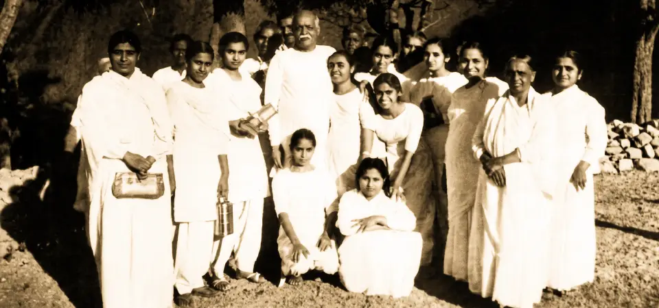
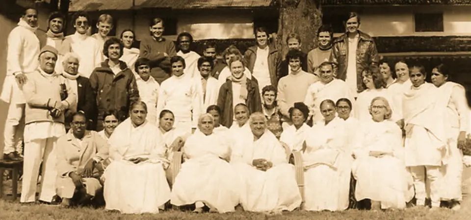
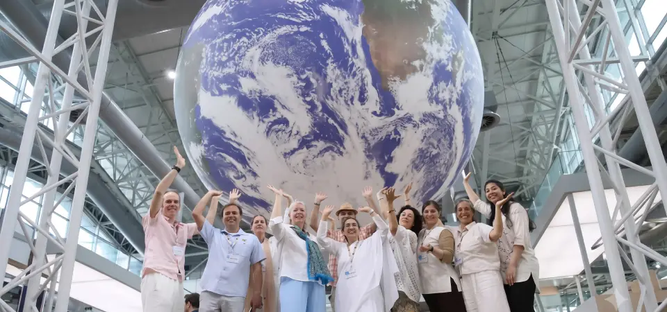
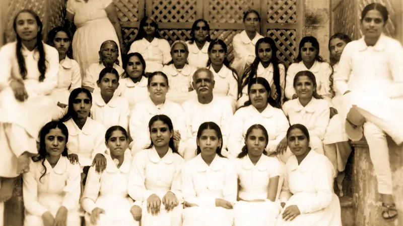
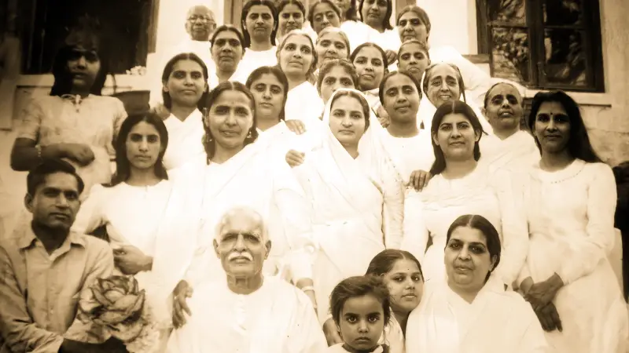

Raja Yoga
Meditation
Raja Yoga
Meditation
สัมผัสประสบการณ์สมาธิราชโยคะ 7 วัน ที่จะเปลี่ยนโลกภายในของคุณ ณ มูลนิธิ บราห์มา กุมารี ราชาโยคะ เชียงใหม่

บราห์มา กุมารี ราชาโยคะ ก่อตั้งขึ้นบนหลักการปฏิวัติทางจิตวิญญาณ โดยให้สตรีเป็นผู้นำในการบริหารและแนะแนวทางจิตวิญญาณตั้งแต่วันแรกในปี 1936 ซึ่งถือเป็นลักษณะเฉพาะตัวที่สอดคล้องกับคุณค่าดั้งเดิมของความเมตตา ความอ่อนโยน และความมั่นคงเด็ดเดี่ยวในการสร้างสันติภาพโลก
การประสานพลังความสงบและความอบอุ่นเสมือนมารดา ช่วยให้กระบวนการทำสมาธิราชาโยคะเป็นเรื่องเรียบง่าย ลึกซึ้ง และเปิดกว้างต้อนรับทุกท่านด้วยหัวใจอันบริสุทธิ์เพื่อหลีกลี้จากความเหนื่อยล้าทางกายใจ
เรียนรู้เกี่ยวกับการแผ่ขยายพลังเงียบจากเมืองไฮเดอราบัด รัฐสินธ์ สู่แคมปัสเขาอาบู ประเทศอินเดีย สู่อำเภอเมือง จังหวัดเชียงใหม่
ดาดา เลคราช เป็นพ่อค้าอัญมณีผู้มั่งคั่งและมีชื่อเสียงโด่งดัง...
ในปี ค.ศ. 1936 ขณะที่อาชีพการงานกำลังเจริญรุ่งเรืองถึงขีดสุด...
ในช่วงแรกเริ่มของกลุ่มโอม มานดาลี...
ในปี ค.ศ. 1947 ความโหดร้ายจากการแบ่งแยกดินแดน...
ดาด้า เลคราช ได้รับนามใหม่ว่า 'บราห์มา บาบา'...
ตลอดช่วงชีวิตของมัมม่า...
การละสังขารของบราห์มา บาบา...
หลังการจากไปของบราห์มา บาบา...
ศูนย์ราชโยคะที่เป็นรากฐานสำคัญแห่งแรก...
เมื่อครั้งที่ ดาดี้ ปรากาชมณี เดินทางไปเยือน...
ดาดี้ จางกี เดินทางจากประเทศอินเดีย...

ค.ศ. 1975(หมายเหตุ: ในภาพต้นฉบับการ์ดใบนี้ประกอบด้วยภาพถ่ายประวัติศาสตร์...)
ในปี ค.ศ. 1980 มหาวิทยาลัยทางจิตวิญญาณของโลก...
ตั้งแต่ปี ค.ศ. 1990 ล่วงเลยเข้าสู่ทศวรรษ 2000...
ดาดี้จีผู้เป็นที่รักยิ่งของเรา...

ค.ศ. 2019ปัจจุบัน มหาวิทยาลัยทางจิตวิญญาณของโลก...
บุคคลสำคัญผู้ค้ำจุนแนะแนวทางนำแสงสว่างอันเป็นความดีงามบริสุทธิ์เพื่อมนุษยชาติ
ผู้ก่อตั้ง
เลกราช คริปาลานี อุทิศชีวิต พลังกาย และทรัพย์สินทั้งหมด เพื่อวางรากฐานของสถาบันและมหาวิทยาลัยทางจิตวิญญาณโลก
หัวหน้าคณะผู้บริหารคนแรก
หัวหน้าฝ่ายบริหารคนแรกผู้มีพลังโยคะที่สง่างาม ดูแลสตรีในกลุ่มธรรมและแนะแนวทางจิตวิญญาณอย่างลึกซึ้ง
หัวหน้าผู้นำฝ่ายจิตวิญญาณและการบริหาร
ผู้นำผู้เปี่ยมด้วยความรัก ความเคารพ และความเชื่อมั่นเป็นหัวใจ นำพาความเจริญรุ่งเรืองและการแผ่ขยายงานธรรมไปทั่วโลก
หัวหน้าผู้นำร่วมฝ่ายจิตวิญญาณและการบริหาร
อุทิศตนศึกษาธรรมและทำงานรับใช้มานานกว่าแปดทศวรรษ ดำรงตำแหน่งหัวหน้าผู้บริหาร และนำพาความสงบเย็นแก่ดวงจิต
หัวหน้าผู้นำฝ่ายจิตวิญญาณและการบริหาร
ผู้นำผู้ก้าวข้ามขีดจำกัดทางกายภาพทั้งหมด มีศรัทธาอันหนักแน่นและพลังจิตที่มั่นคงและสงบนิ่งที่สุดในโลก
หัวหน้าผู้นำฝ่ายการบริหาร
หนึ่งในเสาหลักผู้ร่วมสร้างรากฐานของบราห์มา กุมารี ราชาโยคะ ดำเนินชีวิตด้วยความบริสุทธิ์ สงบ และกายจิตที่เบาสบายปราศจากความกังวล
ผู้ร่วมหัวหน้าผู้นำฝ่ายการบริหาร
ผู้บุกเบิกสำนักงานใหญ่ภูมิภาคอเมริกาและทำหน้าที่ตัวแทนในองค์การสหประชาชาติ มีธรรมชาติอันลุ่มลึกและรักความสันโดษ
ผู้อำนวยการศูนย์ประจำทวีปยุโรป
สะพานเชื่อมธรรมระหว่างตะวันออกและตะวันตก ผู้อำนวยการศูนย์ประจำประเทศเยอรมนีและยุโรป ถ่ายทอดสมาธิราชโยคะกว่า 75 ประเทศ
Many years have passed since Brahma Baba experienced his life-altering visions. Throughout his lifetime, he remained remarkably ahead of his era, yet his profound legacy continues to thrive. His unique interpretation of ancient spiritual wisdom, along with his embrace of each individual's spiritual identity over physical realities, enabled him to dissolve deep-seated barriers of caste, gender, and religion. His unwavering conviction has inspired millions to awaken to their spiritual essence and realize their inner potential.

Pioneering a paradigm shift in 1936, he placed women at the forefront of the movement—a revolutionary act for its time—and empowered them to cultivate essential life skills. Transcending the rigid confines of the traditional caste system in India, he paved a way for every individual to find belonging and actualize their highest potential in their own unique way. He bestowed a groundbreaking framework of spiritual knowledge, enabling anyone to experience themselves as a pure soul during meditation, regardless of religious background (which he viewed as a beautiful enhancement). Ultimately, he guided humanity closer to a personal, profound connection with the Divine.

While most of the young women entrusted with leadership in the 1930s have now completed their earthly journeys, three of these 'original jewels' still grace the world today. As a new generation of leaders steps forward, they mirror their forebears as beacons of love, peace, and wisdom. Deeply revered within the Brahma Kumaris community, they continue to serve alongside global representatives, imparting spiritual teachings and guidance across more than 8,000 centers in over 110 countries worldwide.
หมุนวงล้อแห่งคุณธรรมและซึมซับพลังงานอันบริสุทธิ์เพื่อเติมเต็มความคิด การแสดงออก และชีวิตของคุณในวันนี้
กดปุ่มด้านล่างเพื่อหมุนวงล้อและรับพลังความสงบพร้อมคุณธรรมนำชีวิตประจำวัน
สัมผัสประสบการณ์การเรียนรู้ความจริงแห่งจิตวิญญาณ 7 วัน เพื่อสร้างความสงบ พลังบวก และความเข้าใจชีวิตอย่างลึกซึ้ง
คุณคือใครภายใต้หน้ากากของโลกใบนี้? กลับคืนสู่ 'ตัวตนที่แท้จริง' ในฐานะดวงวิญญาณ จุดแสงสีทองอันเป็นนิรันดร์
ความรักที่ไร้เงื่อนไขกำลังโอบอุ้มคุณอยู่ เชื่อมต่อดวงวิญญาณของคุณ เข้ากับมหาสมุทรแห่งความสงบ, ความรักและพลัง
ทุกแรงสั่นสะเทือนที่คุณส่งออกไป ย่อมสะท้อนกลับมา เรียนรู้วิธีหยุดสร้างกรรมที่นำทุกข์ และเริ่มเพาะเมล็ดพันธุ์แห่งกรรมอันสูงส่ง
ทุกฉากตอนของชีวิต... ล้วนสมบูรณ์แบบในตัวเอง มองโลกในมุมมองที่กว้างขึ้น และเล่นบทบาทนักแสดงนำที่ยอดเยี่ยมที่สุด
เราต่างยึดโยงแตกกิ่งก้านจากรากแก้วจิตวิญญาณอันเดียวกัน ยอมรับในความแตกต่าง และสัมผัสความรักของการเป็นครอบครัวเดียวกัน
ค่ำคืนที่มืดมิดที่สุด... คือสัญญาณของรุ่งอรุณใหม่ ใช้พลังแห่งความคิดเพื่อก้าวข้ามอุปสรรค และร่วมสร้างโลกที่สวยงาม
นำความสงบสู่ทุกย่างก้าวในชีวิตจริง บานสะพรั่งอย่างงดงามเหนือโคลนตมแห่งความวุ่นวายของโลกภายนอก
สื่อเรียนรู้และหลักสูตรยกระดับจิตวิญญาณขั้นสูง สำหรับผู้ผ่านการอบรมคอร์สพื้นฐาน 7 วันและผู้แสวงหาธรรมระดับลึกซึ้ง (3 หมวดหลัก • 9 บทเรียนย่อย)
แก่นของหมวด: ส่องลึกกลไกจิตระดับลึก (Mind, Intellect, Sanskars) กฎแห่งกรรมในมิติความคิด และการถอดถอนความเคยชินข้ามภพชาติ
แก่นของหมวด: ยกระดับพลังสมาธิสู่สภาวะดิ่งลึกเหนือประสาทสัมผัสทั้ง 5 การฝึกเชื่อมจิตสู่โลกวิญญาณ (Paramdham) และการปลุกพลังทั้ง 8
แก่นของหมวด: การนำพลังจิตวิญญาณสู่การกระทำ (Karma Yoga) การเป็นผู้สังเกตการณ์ที่ตัดขาด การแผ่พลังสากาช และบทบาททรัสตี
คลังข้อคิดและบทความสั้นอ่านง่าย นำภูมิปัญญาจิตวิญญาณมาประยุกต์ใช้ในการดำเนินชีวิตประจำวันและการทำงานอย่างมีความสุข

วิธีระบุและสกัดกั้นความคิดเชิงลบ ความวิตกกังวล และความคิดสิ้นเปลือง พร้อมเทคนิคการสลับสวิตช์จิตใจสู่ความสงบเยือกเย็นภายใน 1 นาที

ทุกการกระทำ คำพูด และความคิดล้วนส่งผลสะท้อนกลับ เรียนรู้วิธีการหว่านเมล็ดพันธุ์แห่งการกระทำอันสูงส่ง เพื่อสร้างโชคชะตาชีวิตที่ดีงาม

การเลือกรับประทานอาหารที่ปรุงด้วยความรักและพลังงานบริสุทธิ์ส่งผลต่อสมาธิและคุณภาพจิตใจอย่างไร วิถีโภชนาการแบบอหิงสาเพื่อสติปัญญาอันสดใส

ในโลกที่หมุนเร็ว เรามักหลงลืมตัวตนที่แท้จริงไปกับบทบาทและหน้าที่ ค้นพบคำตอบของคำถาม "ฉันคือใคร" ผ่านปรัชญาดวงจิตที่จะเปลี่ยนมุมมองต่อชีวิตทั้งหมด

สมองของเราไม่เคยได้พักจริงในโลกที่เต็มไปด้วยเสียงรบกวน เรียนรู้วิธีฝึกความเงียบภายในวันละ 10 นาที เพื่อเติมพลังจิตใจที่ลึกซึ้งยิ่งกว่าการนอนหลับ

เราแบกภาระใจที่ไม่จำเป็นไว้มากมาย ความผิดหวังในอดีต ความคาดหวังที่ไม่สมหวัง เรียนรู้ศิลปะการปล่อยวางที่แท้จริง เพื่อชีวิตที่เบาสงบและเปี่ยมพลัง
ผ่อนคลายจิตใจและซึมซาบพลังงานแห่งความสงบ ผ่านคลังบทเพลงบรรเลงจิตวิญญาณและสื่อสมาธิคุณภาพสูงจาก YouTube
คลังบทเพลงสมาธิบรรเลงสดใสยามเช้า ช่วยเปิดรับพลังความสุขและสติในการเริ่มต้นวันใหม่
พักสมองจากความวุ่นวาย เพิ่มประสิทธิภาพการทำงานด้วยท่วงทำนองที่สร้างความสงบ
คลังดนตรีบำบัดคลื่นสมองเดลตา ช่วยปลดปล่อยความเหนื่อยล้า น้อมจิตสู่การนอนหลับสนิท
ปฏิทินงานอบรม สัมมนาสมาธิ และกิจกรรมส่งเสริมสันติภาพ ณ ศูนย์บราห์มา กุมารี เชียงใหม่ เข้าร่วมฟรีไม่มีค่าใช้จ่าย
รวมพลังจิตสงบพร้อมกันทั่วโลก ส่งคลื่นความรัก ความเมตตา และสันติภาพบริสุทธิ์ให้แก่เพื่อนมนุษย์และสิ่งแวดล้อม
สัมผัสอากาศบริสุทธิ์ยามเช้า สูดลมหายใจอย่างมีสติ ฝึกสมาธิกลางสวนธรรมชาติ ถ.โชตนา อ.เมือง เชียงใหม่
เรียนรู้การนำราชาโยคะมาขจัดความตึงเครียดจากการทำงาน บำบัดสภาวะ Burnout และฟื้นฟูพลังบวกให้ชีวิต
ป่าหิมพานต์ทางจิตวิญญาณแห่ง Mount Abu สวนสวรรค์ธรรมชาติ แหล่งกำเนิดพลังสมาธิราชาโยคะ 3 แคมปัสหลัก
Madhuban - ป่าแห่งน้ำผึ้ง
แคมปัสดั้งเดิมที่เต็มไปด้วยพลังงานแห่งความสงบและการปฏิบัติตนของท่านบราห์มา บาบา แหล่งกำเนิดและรองรับผู้แสวงหาธรรมนับแสนคนต่อปี
ทะเลสาบแห่งความรู้
สถาบันที่เป็นมิตรต่อสิ่งแวดล้อม ได้รับรางวัลสิ่งแวดล้อมโลกจากการสร้างระบบพลังงานแสงอาทิตย์และระบบรีไซเคิลหมุนเวียนน้ำ
โอเอซิสแห่งความสงบเงียบ
แคมปัสขนาดใหญ่ที่สุดในโลก โอบอุ้มห้องประชุม Diamond Jubilee Hall รองรับคลื่นสมาธิพลังเงียบได้ถึง 20,000 คนพร้อมกันเพื่อส่งสันติภาพแก่โลก
ความประทับใจและความเปลี่ยนแปลงในชีวิตจริงจากผู้ที่ได้สัมผัสสมาธิราชาโยคะและคอร์สเรียน 7 วัน ณ บราห์มา กุมารี
"การทำสมาธิราชาโยคะทำให้ดิฉันพบความสงบที่แท้จริงในจิตใจ อารมณ์ที่เคยร้อนละลายกลายเป็นความเมตตา คอร์ส 7 วันเปลี่ยนมุมมองชีวิตอย่างสิ้นเชิงค่ะ"
ครูสอนศิลปะ • ผู้ผ่านการอบรมคอร์ส 7 วัน
"งานด้านเทคโนโลยีมักสร้างความเครียดและแรงกดดันสูง แต่สมาธิช่วยให้ผมหยุดความคิดลบ สามารถโฟกัสกับปัจจุบันและนอนหลับสนิทขึ้นในทุกๆ คืน"
วิศวกรซอฟต์แวร์ • ผู้เรียนสมาธิประจำ
"คุณครูผู้สอนถ่ายทอดด้วยความสงบเย็นและอบอุ่นเสมือนครอบครัว ความเข้าใจเรื่องกฎแห่งกรรมทำให้จิตใจเบาสบาย ปราศจากความกังวล"
บุคลากรทางการแพทย์ • ผู้ผ่านการอบรมคอร์ส 7 วัน
"การได้สุ่มวงล้อคุณธรรมและนั่งสมาธิสั้นๆ 1 นาทีทุกชั่วโมง ทำให้การบริหารงานและการตัดสินใจในแต่ละวันเต็มไปด้วยความมั่นใจและความสงบ"
ผู้ประกอบการธุรกิจ • ผู้เข้าฝึกสมาธิเชียงใหม่
"ประทับใจบรรยากาศสวนธรรมธรรมชาติเชียงใหม่มากค่ะ บริสุทธิ์ สงบ และเปิดกว้างต้อนรับทุกคนโดยไม่มีค่าใช้จ่าย รู้สึกโชคดีที่ได้รู้จักที่นี่"
นักศึกษาปริญญาโท • ผู้ผ่านการอบรมคอร์ส 7 วัน
"สถาบันแห่งนี้มอบประสบการณ์ทางจิตวิญญาณที่ลึกซึ้งที่สุด การตระหนักรู้ว่าตนเองคือดวงวิญญาณบริสุทธิ์เป็นของขวัญอันทรงคุณค่าที่สุดในชีวิต"
นักท่องเที่ยว • ผู้เข้าเรียนชาวต่างชาติ
แบ่งปันความประทับใจของคุณเพื่อส่งต่อความสงบและแรงบันดาลใจให้แก่ผู้อื่น
เรียนรู้เพิ่มเติมเกี่ยวกับการฝึกฝนจิตวิญญาณและแนวทางการดำเนินชีวิตของ บราห์มา กุมารี
หลักสูตรไม่มีค่าใช้จ่ายใดๆ ทั้งสิ้น กรุณากรอกข้อมูลเพื่อแจ้งความประสงค์เข้าเรียน
เชิญร่วมสัมผัสจิตสมาธิวิเวกศึกษาทางคุณธรรมเพื่อการปฏิวัติตนได้โดยไร้ค่าใช้จ่ายใดๆ ทั้งสิ้น

หลักสูตรการฝึกปฏิบัติราชาโยคะทำสมาธิทั้งหมด เปิดสอนให้ฟรีตามวิถีแห่งทานและพลังบริสุทธิ์เพื่อความสงบภายในของทุกชีวิต
คัดลอกลิงก์เรียบร้อยแล้ว!
คุณสามารถวางลิงก์ส่งให้เพื่อนหรือครอบครัวได้ทันที
ข้อความของคุณจะถูกส่งให้เจ้าหน้าที่ตรวจสอบก่อนเผยแพร่ลงบนเว็บไซต์
เติมพลังชีวิตและเปิดรับแสงสว่างแห่งสติในเช้าวันใหม่